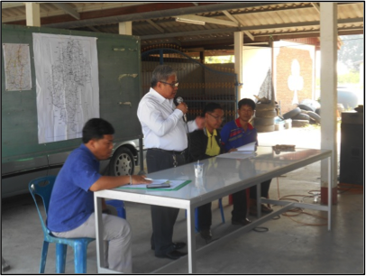

2.1 แนวคิดและหลักการการใช้พื้นที่ลุ่มต่ำปี 2560
เนื่องด้วยปัญหาการระบายน้ำของลุ่มน้ำเจ้าพระยา ซึ่งใช้แม่น้ำเจ้าพระยาเป็นแม่น้ำสายหลักในการระบายน้ำ หากเกินความจุลำน้ำจะทำให้เกิดความเสียหายในหลาย ๆ จุด และหากมีปริมาณน้ำจำนวนมากเข้าสู่พื้นที่ตอนล่างลุ่มน้ำเจ้าพระยาก่อนที่ไหลลงสู่อ่าวไทยนั้นเป็นพื้นที่เศรษฐกิจของประเทศ จึงจำเป็นต้องมีการตัดยอดน้ำก่อนเข้าสู่พื้นที่ดังกล่าว พื้นที่ทุ่งโพธิ์พระยาเป็นพื้นที่ลุ่มต่ำที่สามารถรับน้ำจากแม่น้ำเจ้าพระยา ผ่านแม่น้ำท่าจีนเข้าสู่โครงการได้จึงกำหนดให้ทุ่งโพธิ์พระยาเป็น 1 ในทุ่งรับน้ำจำนวน 12 ทุ่งรับน้ำตอนล่างของลุ่มน้ำเจ้าพระยา
2.2 การเตรียมความพร้อมของแต่ละทุ่ง
2.2.1 การสำรวจอาคาร เตรียมความพร้อมใช้งาน
โครงการส่งน้ำและบำรุงรักษาโพธิ์พระยาได้มีการสำรวจความพร้อมใช้งานของอาคารชลประทานต่าง ๆ ในปีงบประมาณ 2560 โดยสรุปดังนี้
| |
| |
| |
| |
|
2.2.2 การประชาสัมพันธ์
โครงการส่งน้ำและบำรุงรักษาโพธิ์พระยา ได้จัดประชุมสร้างการรับรู้ความเข้าใจการรับน้ำเข้า-ออกจากทุ่งและการทำนาปรังปี 2560/2561 ตามสถานที่ต่าง ๆ ดังนี้
 | |
|  | |
 | |
 | |
 | |
 |
2.3 แผนและผลการรับน้ำเข้าทุ่ง
ปฏิทินการเพาะปลูกเริ่มเพาะปลูกต้ังแต่เดือนพฤภาคม และเก็บเก่ียวแล้วเสร็จก่อนช่วงเดือนสิงหาคม เพื่อเตรียมพื้นท่ีรับปริมาณน้ําหลากจากแม่น้ําสายหลัก ลุ่มน้ําสาขา และปริมาณฝนตกในพ้ืนท่ี เพ่ือควบคุมปริมาณน้ําในแม่น้ําเจ้ําพระยาไม่ให้เกิดผลกระทบในพื้นท่ีด้านท้าย ทั้งน้ีควบคุมระดับน้ําในพื้นท่ีลุ่ม ต่ําทุ่งโพธิ์พระยาไม่ให้กระทบต่อ การดําเนินชีวิตประจําวัน และการสัญจรของราษฎรในพ้ืนที่ [การประเมิน น้ำในแม่น้ำเจ้าพระยาในช่วงเวลาต่าง ๆ] [กำหนดแผนการรับน้ำ ตาราง] []